Small Quick Slot items stay at the hip. Large ones stay in the pocket verse while the bag is worn. Elytra hides the worn bag and all attached gear, while storage, controls and light keep working.
Slim skin, right main arm. The apple sits in its pouch below the pack.
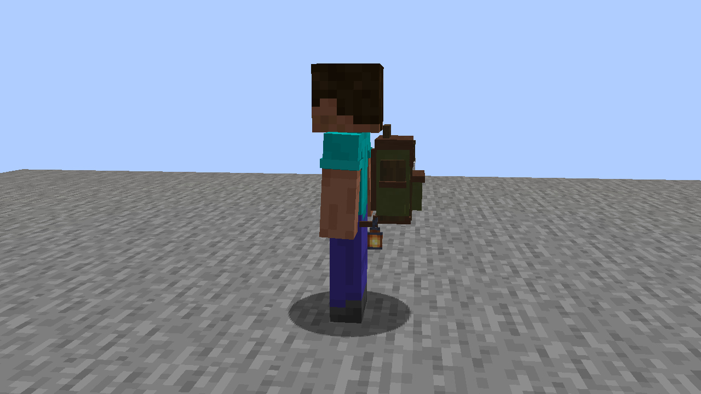
Wide skin, left main arm. The lantern follows the hip and still emits light.
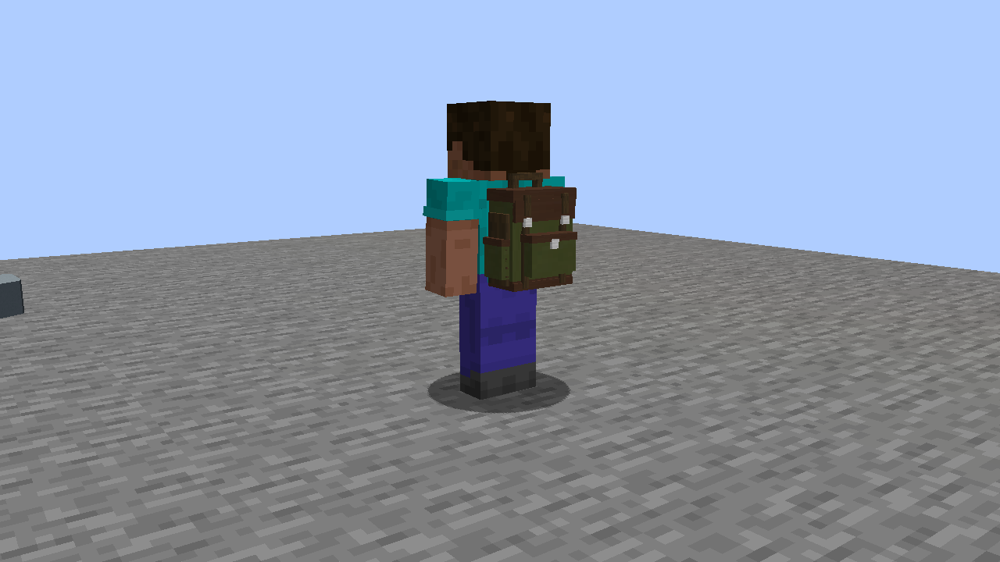
The separate Quick Slot stays usable. Dedicated backpack mounts remain independent.
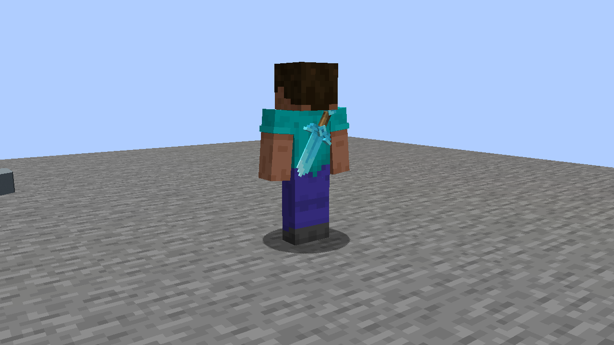
Refined Tools supplies the actual sword model. Its approved body scale is unchanged.
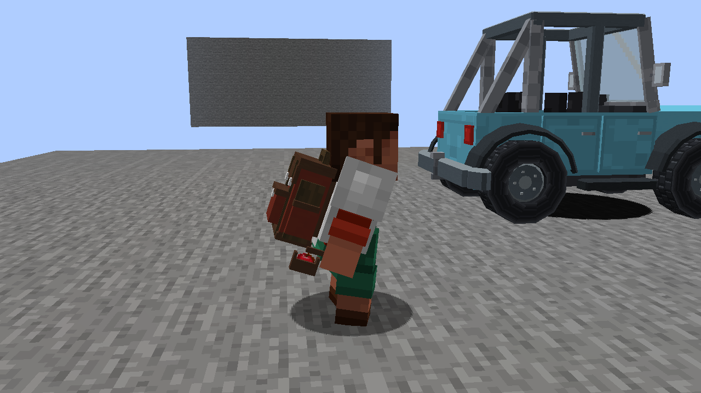
Actual crouch input moves the pouch with the body.
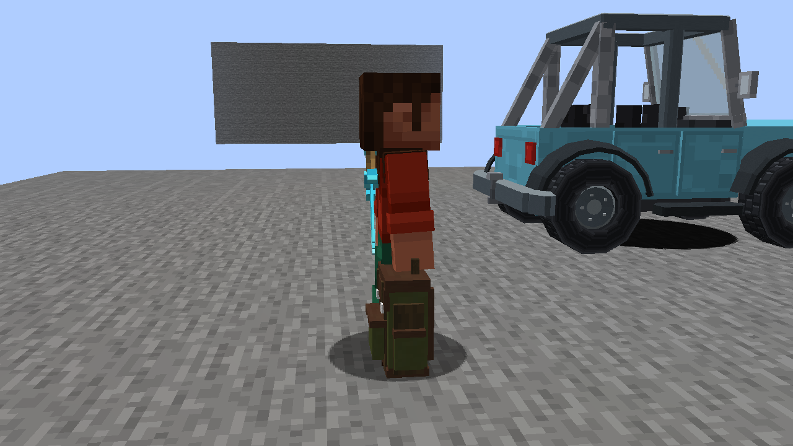
Holding a bag does not count as wearing it.
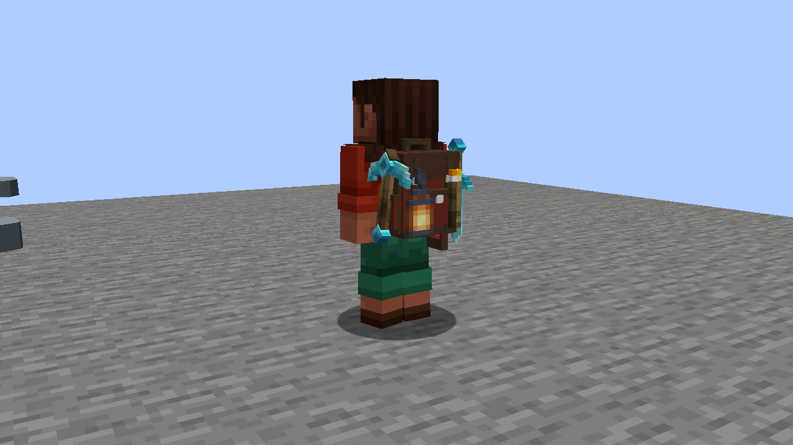
All four mounts are visible on the worn bag.
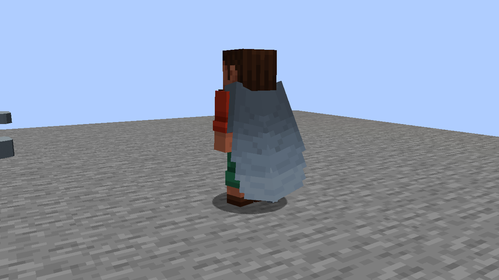
Bag, mounts and Quick Slot body item are hidden. Mounted light remains 15.
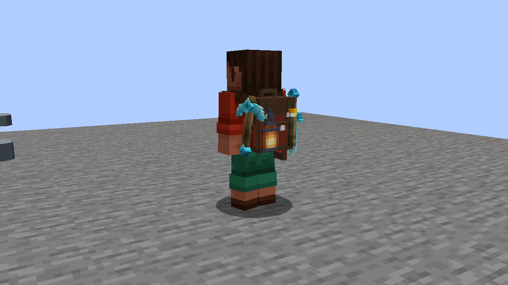
The same bag and mounted items immediately return.
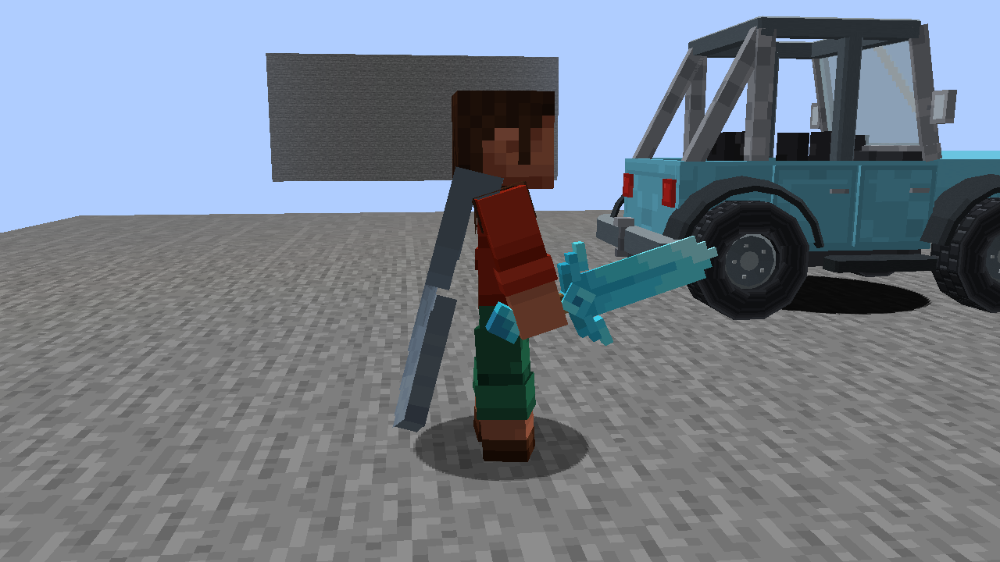
The drawn sword renders normally in hand. The hidden bag does not claim the arm.
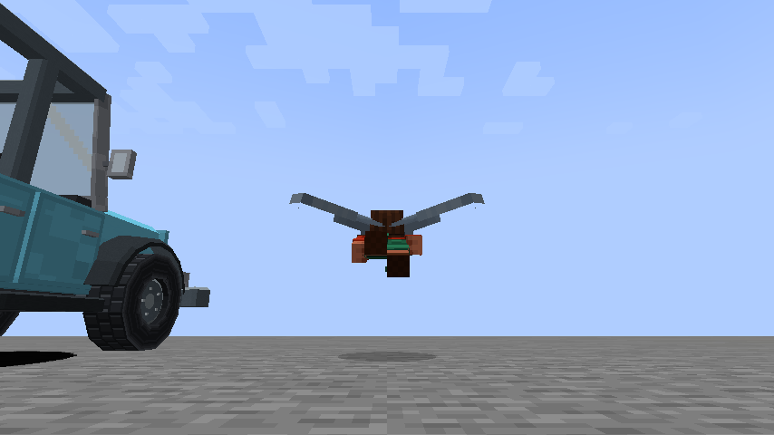
Server-confirmed glide after normal jump input. The wings are clear.
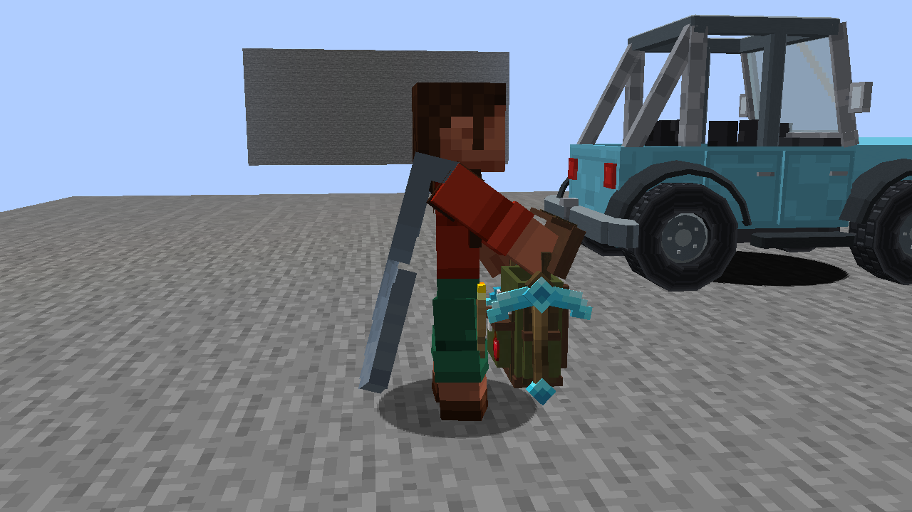
Normal right-click, top-strap carry and opening remain available with elytra.
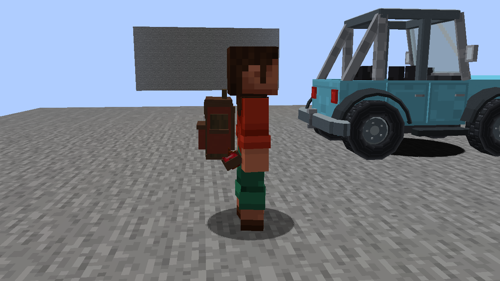
A test resource pack changes the apple tilt and scale while a bag is visible.
A real reload restores the approved fit; this temporary tuning does not ship.
Two real clients on a dedicated test server. The slim actor is viewed with Fresh Animations / EMF / NEA; the wide actor is viewed by the plain client. Refined Tools models are active. These captures use no shaders. Click a capture for the original full frame. Validation and remaining limits.